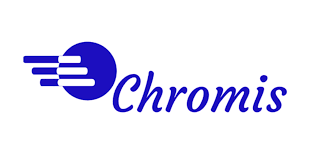
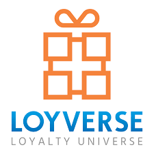

¿Qué es un software libre?
El software libre para TPV es aquel que puede ser utilizado, copiado, modificado y distribuido de forma gratuita. No tiene restricciones legales ni costos asociados a su adquisición u uso. Permite la adaptación y personalización según las necesidades del usuario, brindando flexibilidad en la gestión de puntos de venta. Además, fomenta la colaboración y la comunidad de desarrolladores, permitiendo la mejora continua del software y la resolución de problemas de manera conjunta. En resumen, el software libre para TPV es una herramienta accesible, adaptable y colaborativa para la gestión de puntos de venta.
¿Cuales son los software libres más utilizados en el mercado?
Existen bastantes software de pago utilizados para el TPV, principalmente son usados:
-
Openbravo:
Es un sistema de gestión empresarial de código abierto que incluye funcionalidades TPV, permitiendo gestionar ventas, inventario y control financiero, entre otros.
-
Odoo:
Es una suite de aplicaciones de código abierto que ofrece diferentes módulos, incluyendo TPV, para gestionar ventas, inventarios y facturación de manera integrada.

-
Floreant POS:
Es un software de punto de venta de código abierto que se enfoca principalmente en la industria de la restauración, permitiendo gestionar pedidos, mesas, inventarios y reportes.
-
Chromis POS:
Es un software de punto de venta de código abierto que ofrece funcionalidades avanzadas como administración de inventarios, múltiples terminales y fácil integración con otras aplicaciones
 -
Loyverse POS:
Es una aplicación de punto de venta móvil de código abierto que se puede usar en dispositivos iOS y Android, permitiendo gestionar ventas, inventario y empleados desde cualquier lugar con conexión a internet.

¿Cuanto dinero debo invertir en ellos?
A continuación, te proporcionaré información sobre las diferentes opciones y tarifas disponibles para cada uno de los software mencionados:
En primer lugar, es importante mencionar que los software TPV (Terminal de Punto de Venta) libres, on de código abierto y, por lo tanto, su costo base es gratuito.
Sin embargo, es posible que existan costos asociados en términos de servicios adicionales, soporte técnico y funcionalidades avanzadas, dependiendo de las necesidades específicas de tu negocio.
- Openbravo: Si bien el software base es gratuito, Openbravo ofrece diferentes planes de suscripción para servicios adicionales, como soporte técnico y actualizaciones. Los precios varían en función del tamaño y las necesidades de tu negocio, por lo que te sugiero que contactes directamente al equipo de ventas de Openbravo para obtener una cotización personalizada.
- Odoo: Brinda servicios adicionales que pueden tener un precio, como soporte técnico y módulos adicionales. Odoo proporciona diferentes versiones, incluyendo una versión comunitaria de código abierto y versiones comerciales con funcionalidades ampliadas.
- Floreant POS: No hay información sobre tarifas mensuales, anuales o licencias en su sitio web oficial, lo que sugiere que no hay costos adicionales asociados con el software básico. Sin embargo, es posible que existan servicios de soporte técnico adicionales disponibles por separado, pero esto dependerá de las opciones que elijas como usuario.
- Chromis POS: No se mencionan tarifas mensuales, anuales o licencias adicionales en su sitio web oficial. Sin embargo, hay servicios de soporte técnico disponibles por separado a través del foro de la comunidad Chromis o mediante la contratación de servicios de terceros.
- Loyverse POS: No se mencionan tarifas mensuales, anuales o licencias adicionales en su sitio web, lo que indica que el software base es gratuito. Sin embargo, Loyverse ofrece complementos y servicios adicionales, como la integración con impresoras de recibos y servicios en la nube, que pueden tener costos asociados específicos según las necesidades de tu negocio.
En conclusión, los precios y las tarifas pueden variar y es fundamental que te pongas en contacto directamente con los proveedores de software para obtener información actualizada y personalizada sobre los costos específicos en Euros para cada uno de estos software TPV libres.
¿Cuál es el sentido usar un software libre y no de pago?
El sentido de utilizar un software de pago en lugar de uno libre radica en varias ventajas:
- Ahorro de costos: Al no requerir una inversión económica para adquirir el software, se pueden destinar los recursos en otras áreas del negocio.
- Flexibilidad y personalización: El software libre permite adaptarlo según las necesidades específicas del negocio, permitiendo una mayor flexibilidad y adaptabilidad.
- Comunidad de desarrollo: Al ser software de código abierto, existe una amplia comunidad de desarrolladores que constantemente mejoran y actualizan el software, brindando una mayor seguridad y nuevas funcionalidades.
- Independencia del proveedor: Al no depender de un proveedor específico, se evitan costos adicionales por licencias y se tiene mayor control sobre los derechos de uso y distribución del software.
- Transparencia y confianza: Al tener acceso al código fuente, se puede verificar la seguridad y fiabilidad del software, lo cual genera confianza en su utilización.